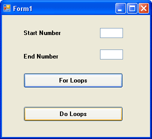

Do Loops in VB .NET
We saw with the For Loop that a specific number of times to loop was coded into it. We said:
For startNumber = 1 To 4
We knew that we only wanted to loop four times. But what if we don't know how many times around the loop we want to go? Later, we'll be opening text files and reading the data from them. If we used a For loop to get every line of text, we'd have to know before hand how many lines the text file held. A For Loop would not be very efficient in this case.
But a Do Loop would be. With a Do Loop we can use word s like "While" and "Until". And then we can say, "Go round and round the loop While there's still text to be read from the file." An example might make things clearer.
Load the form you created for the last exercise, the one that has two textboxes and a Button and tested your understanding of For loops.
Add another button to the Form. Your form might look something like this:

Double click the new button to open the code window, and then type the following code for the new button:
Dim number as Integer
number = 1
Do While number < 5
MsgBox number
number = number + 1
Loop
When you've finished, run the programme and see what happens. The numbers 1 to 4 should have displayed in your message box.
So the Do loop keeps going round and around. And when it gets to the top, it tests the "While" part - Do While number is Less Than 5. It's really answering a Yes or No question: is the number inside the variable called number Less Than 5? If it is Less Than 5, go round the loop again. If it's not Less than 5, Visual Basic jumps out of the Loop entirely.
You can add the "While ... " part to the bottom, just after the word "Loop". Like this:
Do
number = number + 1
Loop While number < 5
Try it and see what difference it makes.
None, right? But there is a difference between the two. With the "While ... " part at the bottom, the code above it gets executed at least once. With the code on the first line after the word "Do", the code might not get executed at all. After all, the number inside the variable might already be Greater Than 5. If it is, Visual Basic won't execute the code.
No more reading these lessons online - get the eBook here!
Do ... Until
You have another choice for Do Loops - Do ... Until.
There's not much difference between the two, but a Do ... Until works like this. Change your Loop code to the following:
Do Until number < 5
MsgBox number
number = number + 1
Loop
Run the code and see what happens.
Nothing happened, right? That's because we "Keep looping UNTIL the number
in the variable called number is Less Than 5" The problem is, the number
inside the variable is already Less Than 5. And if the number is Less than 5,
then the code won't execute - because it has already met the end condition.
Change that Less Than sign to a Greater Than sign, and then test your code again. Now what happens?
The numbers 1 to 5 should have displayed. Again, the loop keeps going round and around testing to see if our end condition is met, in this case Is Greater Than 5. If the condition is met, VB breaks out of the Loop; if not, keep going round.
Change the Greater Than sign to Greater Than or Equal to ( >= ), and test it again. It should now print 1 to 4.
The "Until" part can go at the bottom, just after the word Loop. Like this
Do
MsgBox number
number = number + 1
Loop Until number >= 5
To sum up, use a Do Loop if you don't know what the end number is going to be, otherwise a For Loop might be better.
You're now going to write a programme that uses a For Loop to work out the times table.